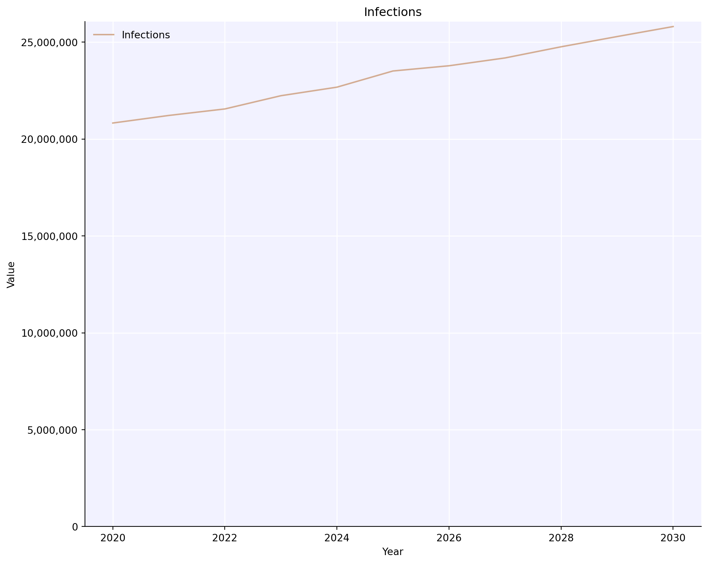
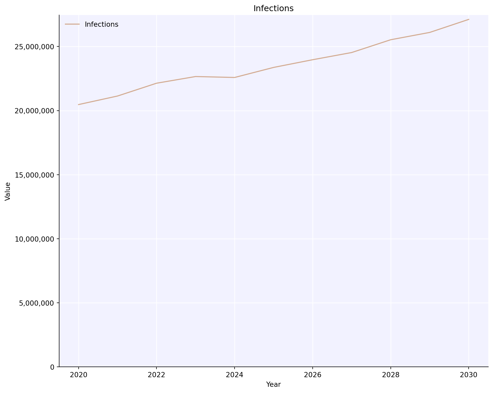
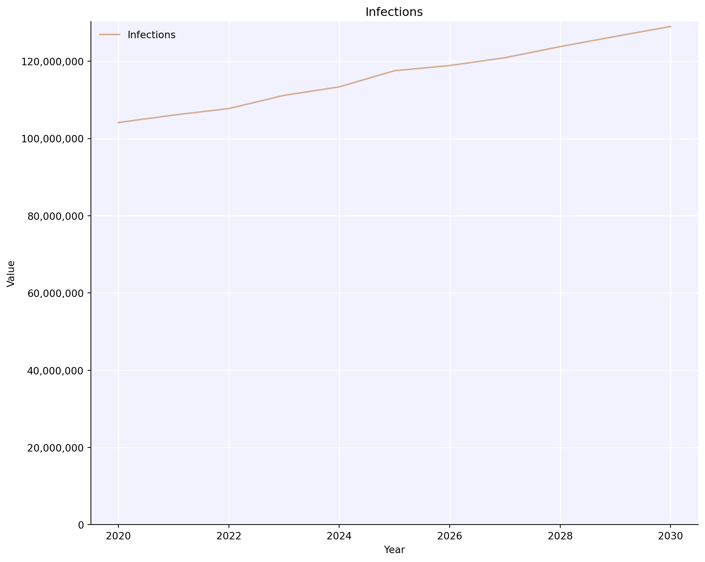
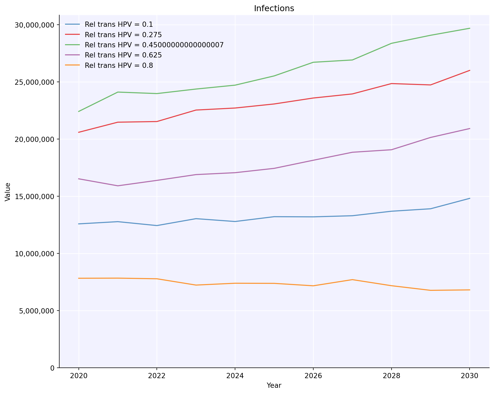
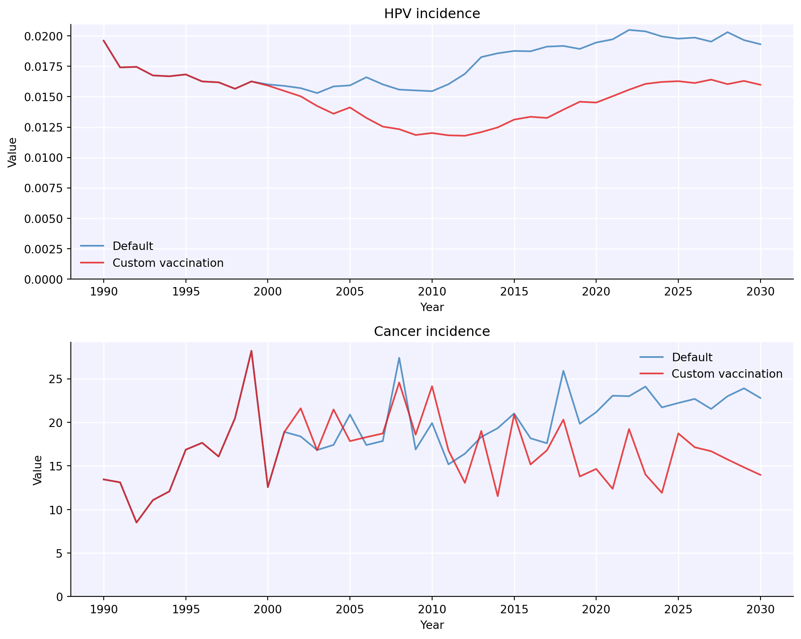
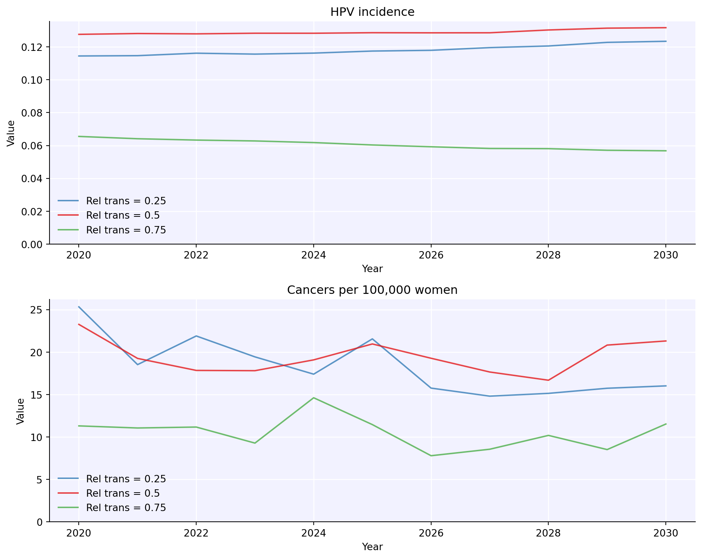

While running individual sims can be interesting for simple explorations, at some point it will almost always be necessary to run a large number of simulations simultaneously – to explore different scenarios, to perform calibration, or simply to get uncertainty bounds on a single projection. This tutorial explains how to do that.
Click here to open an interactive version of this notebook.
Running with MultiSims
The most common way to run multiple simulations is with the MultiSim object. As the name suggests, this is a relatively simple container for a number of sims. However, it contains powerful methods for plotting, statistics, and running all the sims in parallel.
Running one sim with uncertainty
Making and running a multisim based on a single sim is pretty easy:
import hpvsim as hpvhpv.options(jupyter=True, verbose=0)sim = hpv.Sim()msim = hpv.MultiSim(sim)msim.run(n_runs=5)msim.plot();
However, you often don’t care about the individual sims (especially when you run the same parameters with different random seeds); you want to see the statistics for the sims. You can calculate either the mean or the median of the results across all the sims as follows:
msim.mean()msim.plot('infections');

msim.median()msim.plot('infections');

You can see these are similar, but slightly different. You can also treat each of the individual sims as part of a larger single sim, and “combine” the results into one sim:
msim.combine()msim.plot('infections');

Note how now there is no uncertainty and the total number of infections is 5x higher than in the previous plots, since we just added 5 different sims together.
Each of these operations modifies the msim.base_sim object, and does not affect the actual list of stored sims, which is why you can go back and forth between them.
Running different sims
Often you don’t want to run the same sim with different seeds, but instead want to run a set of different sims. That’s also very easy – for example, here’s how you would do a sweep across relative transmissibility of HPV:
import numpy as nprel_trans_vals = np.linspace(0.1, 0.8, 5) # Sweep from 0.5 to 1.5 with 5 valuessims = []for rel_trans in rel_trans_vals: sim = hpv.Sim(beta=rel_trans, label=f'Rel trans HPV = {rel_trans}') sims.append(sim)msim = hpv.MultiSim(sims)msim.run()msim.plot('infections');
Loading location-specific demographic data for "nigeria"
Loading location-specific demographic data for "nigeria"
Loading location-specific demographic data for "nigeria"
Loading location-specific demographic data for "nigeria"
Loading location-specific demographic data for "nigeria"

As you would expect, the more transmissible people with HPV are, the more infections we get.
Finally, note that you can use multisims to do very compact scenario explorations – here we are using the command hpv.parallel(), which is an alias for hpv.MultiSim().run():
def custom_vx(sim):if sim.yearvec[sim.t] ==2000: target_group = (sim.people.age>9) * (sim.people.age<14) sim.people.peak_imm[0, target_group] =1pars =dict( location ='tanzania', # Use population characteristics for Japan n_agents =10e3, # Have 50,000 people total in the population start =1980, # Start the simulation in 1980 n_years =50, # Run the simulation for 50 years burnin =10, # Discard the first 20 years as burnin period verbose =0, # Do not print any output)# Running with multisims -- see Tutorial 3s1 = hpv.Sim(pars, label='Default')s2 = hpv.Sim(pars, interventions=custom_vx, label='Custom vaccination')hpv.parallel(s1, s2).plot(['hpv_incidence', 'cancer_incidence']);
Loading location-specific demographic data for "tanzania"
Loading location-specific demographic data for "tanzania"

Warning: Because multiprocess pickles the sims when running them, sims[0] (before being run by the multisim) and msim.sims[0] are not the same object. After calling msim.run(), always use sims from the multisim object, not from before. In contrast, if you don’t run the multisim (e.g. if you make a multisim from already-run sims), then sims[0] and msim.sims[0] are indeed exactly the same object.
Advanced usage
Finally, you can also merge or split different multisims together. Here’s an example that’s similar to before, except it shows how to run a multisim of different seeds for the same rel_trans value, but then merge multisims for different rel_trans values together into one multisim:
Loading location-specific demographic data for "nigeria"
Loading location-specific demographic data for "nigeria"
Loading location-specific demographic data for "nigeria"
Loading location-specific demographic data for "nigeria"
Loading location-specific demographic data for "nigeria"
Loading location-specific demographic data for "nigeria"
Loading location-specific demographic data for "nigeria"
Loading location-specific demographic data for "nigeria"
Loading location-specific demographic data for "nigeria"

As you can see, running this way lets you run not just different values, but run different values with uncertainty. Which brings us to…
Running with Scenarios
Most of the time, you’ll want to run with multisims since they give you the most flexibility. However, in certain cases, Scenario objects let you achieve the same thing more simply. Unlike MultiSims, which are completely agnostic about what sims you include, scenarios always start from the same base sim. They then modify the parameters as you specify, and finally add uncertainty, if desired. For example, this shows how you’d use scenarios to run the example similar to the one above.
# Set base parameters -- these will be shared across all scenariosbasepars = {'n_agents':10e3} # Configure the settings for each scenarioscenarios = {'baseline': {'name':'Baseline','pars': {} },'high_rel_trans': {'name':'High rel trans (0.75)','pars': {'beta': 0.75, } },'low_rel_trans': {'name':'Low rel trans(0.25)','pars': {'beta': 0.25, } }, }# Run and plot the scenariosscens = hpv.Scenarios(basepars=basepars, scenarios=scenarios)scens.run()scens.plot();
Loading location-specific demographic data for "nigeria"
Loading location-specific demographic data for "nigeria"
Loading location-specific demographic data for "nigeria"
Loading location-specific demographic data for "nigeria"